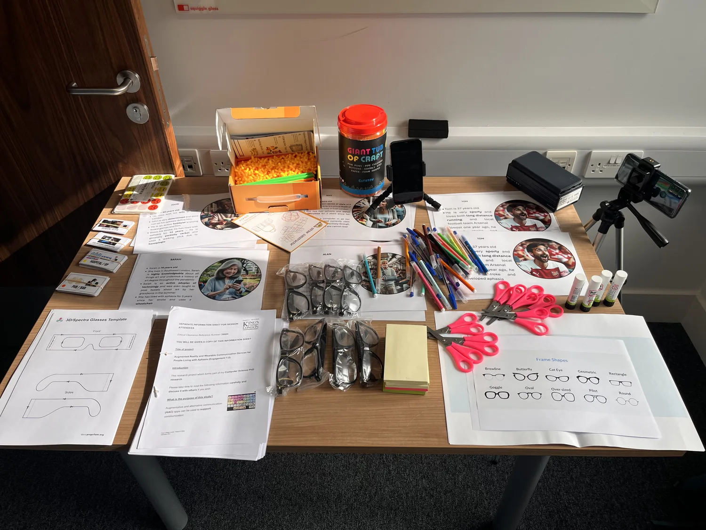
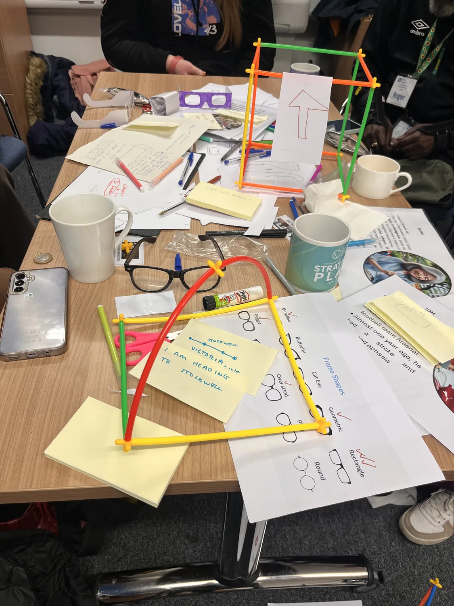

Most high-tech augmentative and alternative communication (AAC) still lives on a phone or tablet. Those screens can be useful, but they can also occupy both hands, pull attention away from a conversation and make communication support conspicuous. Screenless AAC asked what AAC might become if language support could instead be projected into a shared room, carried as private or public audio, or placed spatially through smartglasses.
The project moved from speculative film and advertising clips to accessible, hands-on co-design with people living with aphasia. Those ideas became three working prototypes—Pico-project AAC, Prompt AAC and Holo AAC—then focus-group evaluations with people with aphasia and speech and language therapists. The result was not a simple endorsement of emerging technology. The most futuristic prototype also exposed the sharpest accessibility and social barriers.
Co-designing beyond the tablet
The workshops made unfamiliar mixed-reality concepts tangible. Co-designers first critiqued fictional and commercial examples, then responded to short video scenarios about communication and independent living. Cardboard glasses, transparent sheets, paper prompts and construction straws let participants work through frame style, field of view, position, scale and audio without needing to operate a headset.

Accessible workshop materials translated an unfamiliar technology into objects that could be handled, moved and debated
Co-designers imagined navigation arrows and maps, speaking notes for pressured conversations, private word-finding cues, public electronic speech, object recognition and memory support. They were equally direct about the risks: physical gestures could exclude people with post-stroke paralysis; overlays could create visual and cognitive clutter; private displays could make it harder to establish common ground; and bulky headsets could appear antisocial or simply unlike the glasses people wanted to wear.

Low-fidelity smartglass prototypes explored navigation, speaking prompts, spatial placement and personal frame preferences
Prototypes
Shared projection
Pico-project AAC
An iPhone app paired with a MagSafe pico-projector enlarged maps, photographs, interests and requests onto nearby surfaces. Projection turned the environment into a shared communication prop: participants could tell stories about places, orient group conversation and point to a physical chair while projecting a request onto it.
What we learned: shared, large-scale media supported storytelling and non-verbal communication. Low brightness, blank-wall dependence and sensitive zooming limited where it worked.
Wearable audio
Prompt AAC
An iPhone app stored personal phrases and played them through a small wearable Bluetooth speaker. Alongside standard system voices, it supported Apple Personal Voice, allowing prepared messages to be spoken in a synthesised version of the user’s own voice. Audio could be private, prompting the wearer, or public, speaking during a communication breakdown. The speaker could move towards a conversation partner in a noisy place instead of leaving speech attached to a tablet.
What we learned: Prompt AAC was the comparatively highest-rated and most user-friendly prototype. Participants valued preparedness more than perfect voice imitation, but wanted a louder speaker and a less demanding Personal Voice setup process.
Spatial smartglasses
Holo AAC
A Microsoft HoloLens 2 placed language prompts, transport maps and communication symbols into the wearer’s field of view. A hand menu offered four private or public spoken messages; a head-tracked near menu opened movable maps, beverage symbols and other spatial assets through gesture, eye-gaze or keywords.
What we learned: participants found the concept exciting, but feedback was mixed. Gesture recognition, missing tactile feedback, two-handed actions, headset cost and a socially prominent form made the prototype least convincing for public communication.
Evaluating communication, not novelty
Seven people with aphasia and four speech and language therapists evaluated all three high-fidelity prototypes across two focus groups. Participants used each device with support, completed accessible questionnaires and discussed refinements together. Across 154 ratings, Pico-project AAC and Prompt AAC received predominantly positive responses; Holo AAC produced a much more divided result.
Pico-project AAC moved communication media from a private phone into a shared spacePrompt AAC supported both prepared electronic speech and private prompting
The contrast mattered more than a winner. Projection expanded shared non-verbal communication but depended on the room. Wearable audio was comparatively ordinary, yet its familiarity made it easier to understand and control. Spatial computing could keep information in view, but its private interface and invisible gestures risked weakening the very collaboration AAC is meant to support.
Making smartglasses accessible
The second paper examined the smartglasses strand in greater depth through three interconnected workshops with 14 people with aphasia and seven speech and language therapists. It connected the co-designers’ imagined applications and low-fidelity prototypes to the HoloLens evaluation, asking not only what smartglasses could do, but who their standard interactions already excluded.
Holo AAC evaluation: maps and prompts were promising, while headset gestures exposed barriers for people with hemiplegia
Interaction must fit the body
Hands-free did not mean barrier-free. Two-handed menus and mid-air pressing were difficult or impossible for some participants with hemiplegia, while eye-gaze and voice selection did not provide a reliable fallback for everyone.
Private support can isolate
Head-worn prompts could aid word-finding and navigation, but communication partners could not see the same interface. The headset also obscured eye contact and reduced access to shared props and non-verbal repair.
Discretion is not one aesthetic
Co-designers disagreed about what smartglasses should look like. Some wanted subtle technology; others valued bold, fashionable frames. Accessibility therefore includes personal style, identity and control over whether a device conceals or signals disability.
A note on the prototype: Holo AAC was developed in Unity with MRTK 3 for a King’s College London HoloLens 2. The original implementation was stored on that institutional device and is no longer recoverable. The papers, study media and interaction walkthrough preserve the prototype and what participants taught us through it.